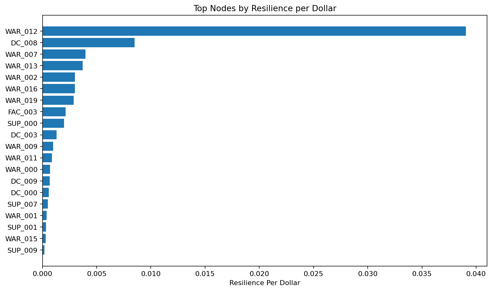
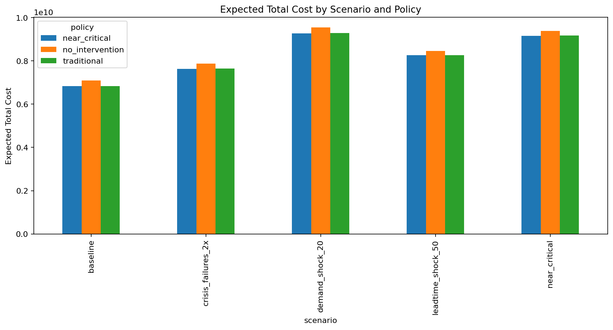
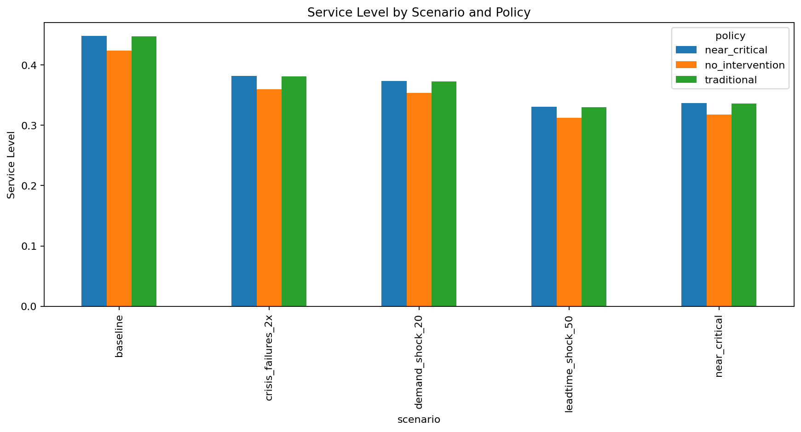
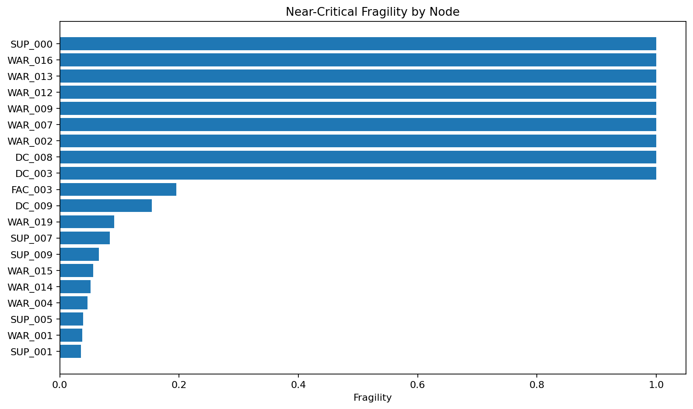
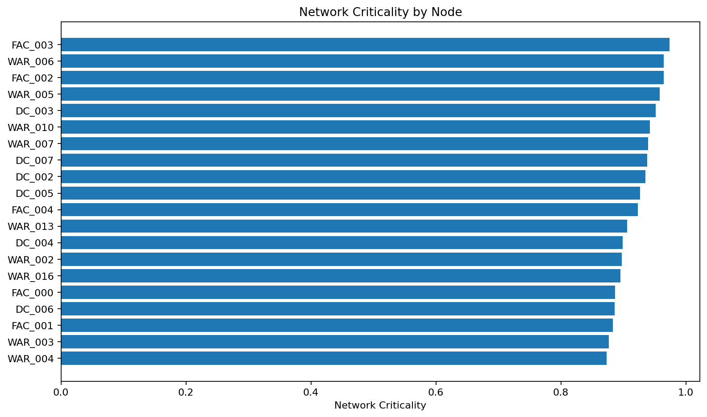

Inventory dynamics, lead times, backorders, shocks and near-critical intervention policy.
Prioritize WAR_012 because it combines near-critical fragility, economic severity and network centrality.




